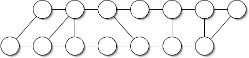
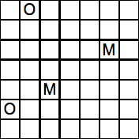
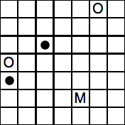
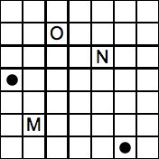
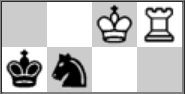

Holiday Puzzles 2019
| 1. 20/20 VISION
|
Use the digits 1 through 9, in increasing order, to make the new year of 2020. You can only add the symbols + – × / ( ).

|
|
| 2. COLORFUL TEAMS
| Match these Division I college football
schools with their colorful team names:
|
|
| 1. Alabama | A. Black Knights
| | 2. Arkansas | B. Blue Devils
| | 3. Army | C. Blue Raiders
| | 4. California | D. Crimson Tide
| | 5. Duke | E. Golden Bears
| | 6. Georgia | F. Golden Eagles
| | 7. Hawaii | G. Golden Flashes
| | 8. Kent State | H. Golden Gophers
| | 9. Miami (of Ohio) | I. Golden Hurricane
| | 10. Middle Tennessee | J. Green Wave
| | 11. Minnesota | K. Mean Green
| | 12. North Texas | L. Orange
| | 13. Rutgers | M. Rainbow Warriors
| | 14. Southern Mississippi | N. RedHawks
| | 15. Syracuse | O. Red Raiders
| | 16. Texas Tech | P. Red Wolves
| | 17. Tulane | Q. Scarlet Knights
| | 18. Tulsa | R. Yellow Jackets
|
|
|
| 3. TWO-DIGIT TOPOLOGY |
|
Insert a different two-digit number in each circle. Circles are connected by a line if the numbers they contain either differ by 1, have a ratio of 2 or 3, or look like the other when turned upside down. For example, 92 could be connected to 26, 46, 91, or 93. Leading zeroes are not allowed.

| |
|
| 4. MNO
| |
In every grid below, each row and column should contain 2 dots and 1 letter. The letter M indicates it is the Midpoint of the dots in its row and column. The letter N indicates it is between the dots but Not the midpoint. The letter O indicates it is Outside the dots. Fill in the missing symbols and dots.
|  |  |  |
| |
|
| 5. CHESS MATES
| |
|
Add a white piece to the position below so that there is mate in 1 move. Then add different white pieces to the same square so that there are mates in 2, 3, and 4 moves. (Thanks to George Sicherman)
|
| |  |
|
|
|